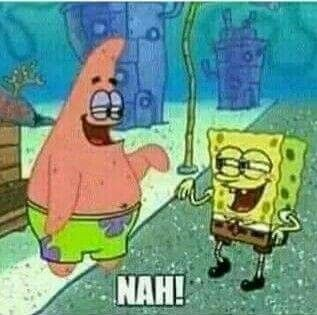

Contact Me!
Want me to make you a retro-looking Neocities website for you? Maybe a doodle? Do YOU want to try and scam me out of my money? Well, you're in luck, buddy! Welcome to the contacts page!
Email address
aleph [at] badbunsen [dot com]
This is the one I'm most likely to check first when it comes to this website and much of my other things. Contact through here first, I'm pretty sure you have a G-Mail account or something.
Discord
badbunsen
(If you're looking to have a sexual relationship with me through Discord, just know that—even if I were an adult—you are a weirdo, and you need to get a real life. I'm not interested in a parasocial relationship with someone I can't really see.)

I mean, I might post on my Twitter account someday, but it'll only be once in a blue moon.